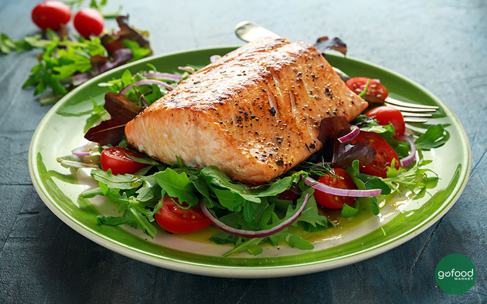
Grilled Salmon
Cá hồi nướng giàu Omega-3 giúp hỗ trợ tim mạch và tăng cơ.
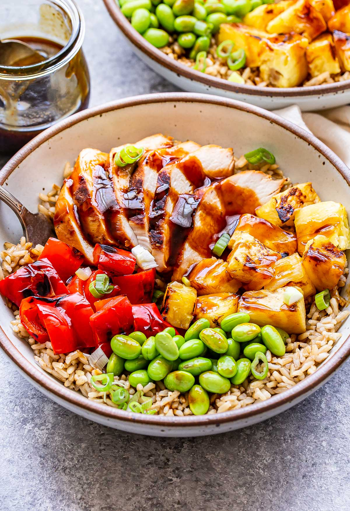
Chicken Bowl
Protein cao phù hợp cho người tập gym và tăng cơ.
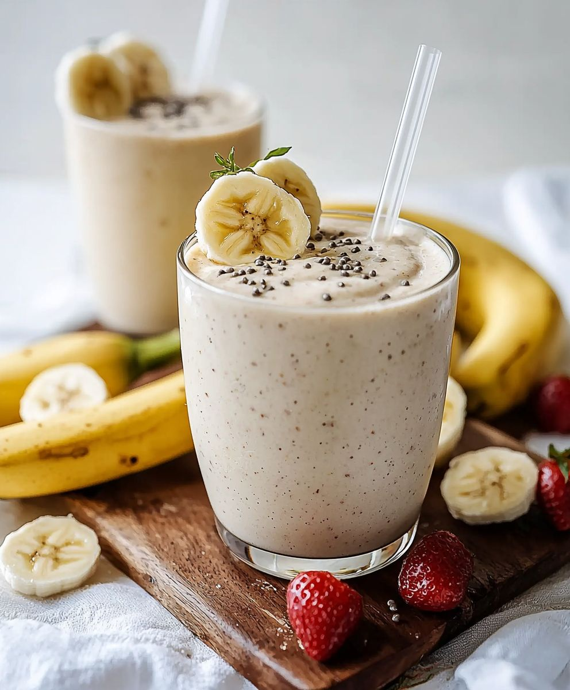
Banana Shake
Nhiều vitamin và chất xơ hỗ trợ giảm cân hiệu quả.
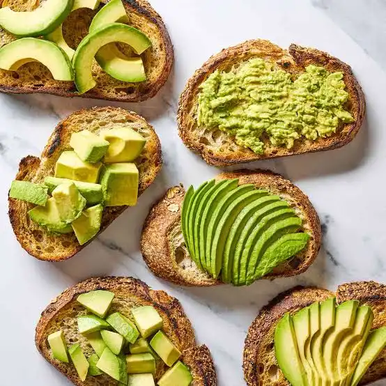
Avocado Toast
Bữa sáng nhanh gọn, đầy năng lượng và chất béo lành mạnh.
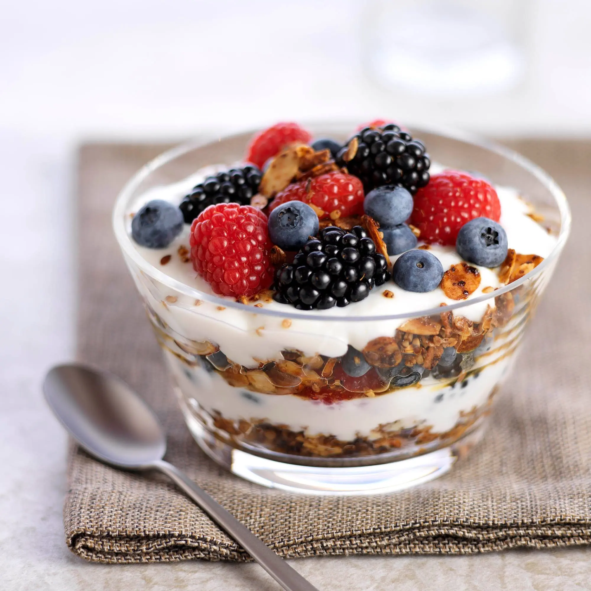
Berry Yogurt Parfait
Lớp sữa chua và trái cây tươi giúp bổ sung chất chống oxy hóa.
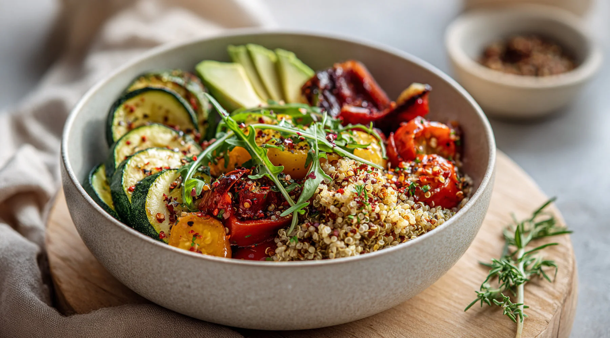
Quinoa Veggie Bowl
Tô ăn giàu rau củ và protein thực vật, phù hợp cho bữa trưa nhẹ.
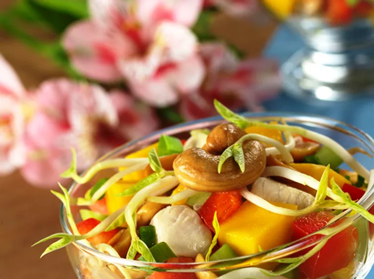
Mango Chicken Salad
Salad trái cây và gà xé đem lại vị ngọt tự nhiên và protein cân đối.
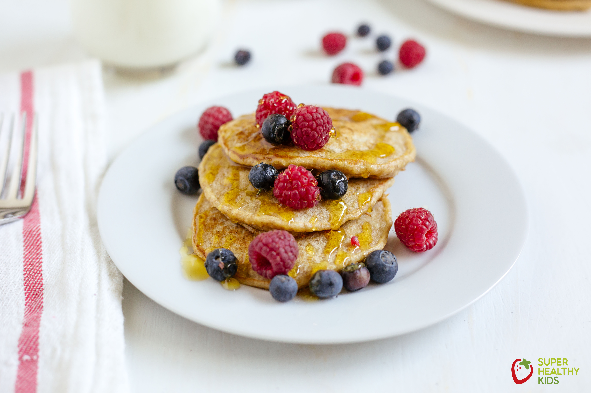
Oatmeal Pancakes
Bánh yến mạch thơm mềm, chọn thêm chuối hoặc mật ong nếu thích.
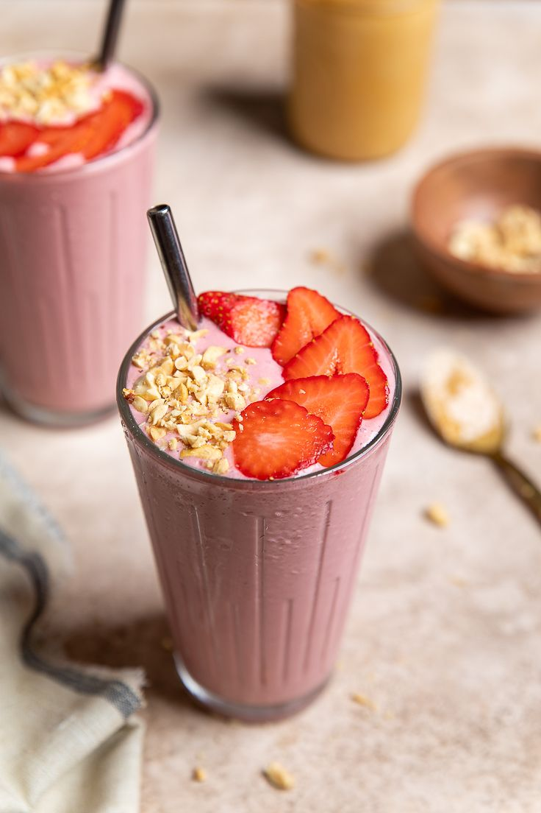
Protein Smoothie
Smoothie giàu đạm và chất xơ, phù hợp bữa ăn sau tập luyện.

Spinach Egg Wrap
Cuộn trứng rau chân vịt thơm ngon, giàu sắt và protein.
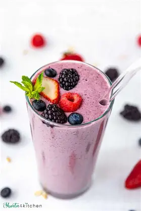
Berry Oat Smoothie
Thức uống trái cây và yến mạch cho năng lượng lâu dài.

Sweet Potato Toast
Bánh mì khoai lang thay thế low-carb, thêm topping sáng tạo.
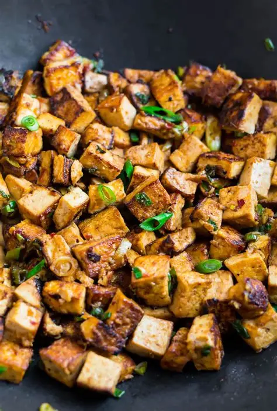
Tofu Stir Fry
Đậu phụ xào rau củ thơm lừng, nguồn protein thực vật lý tưởng.
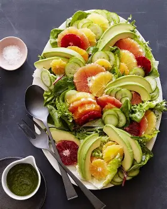
Citrus Avocado Salad
Salad bơ cam tươi mát, cân bằng vitamin và chất béo tốt.
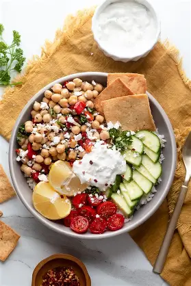
Greek Chickpea Bowl
Bát gà tây Địa Trung Hải đầy đủ đạm thực vật và rau củ.
Salmon Lettuce Roll
Cuộn lá xà lách cá hồi nhẹ nhàng, thơm ngon và ít carb.
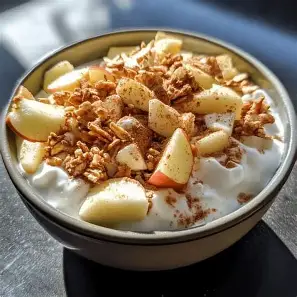
Apple Cinnamon Yogurt
Sữa chua táo quế thơm ngọt, bữa phụ nhẹ nhàng giàu probiotic.
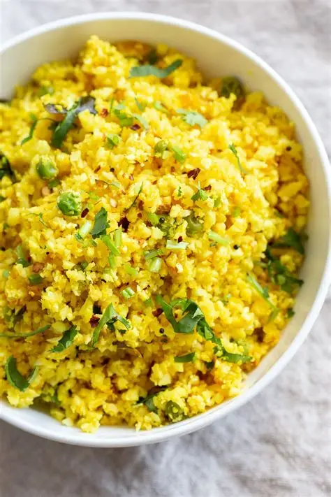
Turmeric Cauliflower Rice
Cơm súp lơ nghệ nhẹ nhàng, phù hợp khi muốn giảm tinh bột.
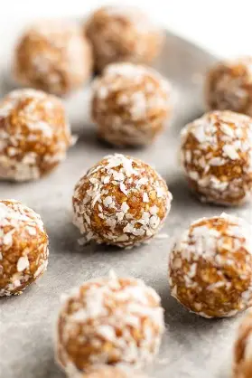
Almond Date Energy Balls
Viên năng lượng hạt và chà là ngọt tự nhiên, bữa phụ tiện lợi.